ICEcore Conference User Guide
This guide covers the installation and initial configuration of the ICEcore Conference software. The term “ICEcore Conference” in this guide applies to all versions of ICEcore Conference unless otherwise noted.
Audience
This guide is intended for ICEcore Conference users.
Additional Documentation
You may find more information in additional ICEcore Conference documentation:
-
ICEcore Conference Help system
-
ICEcore Conference Quick Start Guide
-
ICEcore Conference Operations Guide
-
ICEcore Conference Server Installation Guide
Contents of this Manual
This manual provides information about the following:
-
Setting Up ICEcore Conference
-
Getting Started
-
Configuring Contacts and Buddies
-
Setting Up and Joining Meetings
-
Working in Meetings
Document Conventions
This manual uses the following conventions:
A greater-than symbol (>) is used to separate actions within a step and items in a cross-reference path.
A trademark symbol (®, ™, etc.) denotes a SiteScape trademark. An asterisk (*) denotes a third-party trademark.
When a single pathname can be written with a backslash for some platforms or a forward slash for other platforms, the pathname is presented with a backslash. Users of platforms that require a forward slash, such as Linux or UNIX, should use forward slashes as required by your software.
1.0 Setting Up ICEcore Conference
This chapter describes how to perform the initial setup tasks required to use ICEcore Conference. The initial setup includes the following tasks:
1.1 Installing the ICEcore Conference Client
-
Use the URL in the Welcome e-mail you receive to Install the ICEcore Conference client. Use the User Name and the Password in this e-mail to sign on to ICEcore Conference. This e-mail also provides your personal PIN number and additional information. We recommend that you save this e-mail for future reference.
If you do not have a Welcome e-mail, the ICEcore Conference client can be downloaded from the following URLs:
-
Windows: http://<conferencing-portal-hostname>/imidio/downloads/conferencing.exe
-
Linux: http://<conferencing-portal-hostname>/imidio/downloads/conferencing.rpm
You need your ICEcore Conference User Name and Password to start the client after install.
NOTE:If you have SSL enabled, you should specify https in the URL instead of http.
-
-
Select “Open” or “Run” to invoke the installer after the download completes.
NOTE:It may take a while for the installation to begin on a Linux desktop.
Once the client is installed, you can use either the “ admin” screen name to sign on with the ICEcore Conference client or you can use the screen name of the first user of the first community created earlier.
Once you have signed on, you can add ICEcore Conference users to the community. Refer to the “ICEcore Conference Operations Guide” for information on adding users.
1.2 Starting ICEcore Conference and Signing On
-
In Linux and Windows, double-click the ICEcore Conference desktop icon (placed on the desktop during install).
If you do not see the desktop icon, perform the following:
-
In Windows, select the .
-
In Linux, select , click , and then select the ICEcore Conference icon under or .
The ICEcore Conference client appears.
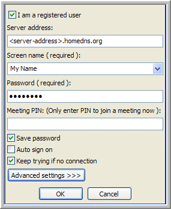 -
-
In the field, type your screen name or select it from the menu.
-
Your screen name is your unique registered user name.
-
Screen names are how ICEcore Conference and IM users recognize you.
-
Screen names are case sensitive and should not contain spaces.
-
Screen names should be alpha-numeric only and should not contain non-ASCII characters. (For example: bathgate222 or gbookworm is accepted, but bathgate 222 or gbook~worm is not accepted.)
NOTE:After the your initial login, your screen name appears in the menu.
-
-
In the field, type your password.
-
Optional Settings:
-
To sign on and join a meeting at the same time, type a meeting PIN or the meeting ID into the field.
-
To save your password, select the option. (If your administrator does not give you the right to use this option, it is not visible.)
-
To sign on automatically when ICEcore Conference starts, select the option (recommended). There are certain circumstances (depending on your Administrative Policy) when you are still prompted to sign on.
-
To reconnect your client when there is no network connection present, select the option (recommended).
-
-
Click to log in.
The ICEcore Conference Main window appears with your meeting list.
1.2.1 Signing Off and Exiting
To sign off from the Main Window, select the menu option.
NOTE:Signing off disconnects you from the ICEcore Conference server, and your contact information is displayed to other users as grey, indicating that you are not online.
To exit from the Main Window, select the menu option.
NOTE:Exiting ends your session and exits ICEcore Conference. To sign on again see Signing On.
1.2.2 Signing On as a Non-Registered User
If you are not a registered user, deselect the option, and then configure the following information:
-
In the field, type your full name, first name, and then last name.
-
In the field, type your Meeting PIN.
NOTE:The Meeting PIN is automatically filled out for most invitations. If you manually installed your client because your organization does not support ActiveX in browsers, you need to enter the Meeting PIN manually. The PIN is found on the web page that comes with a meeting invitation link.
-
In the field, type your phone number (optional).
-
In the field, type your e-mail address (optional).
1.2.3 Important Information if You are Behind a Proxy Server
The meeting software automatically uses the network settings configured for Internet Explorer. In most cases, if you are able to browse using Internet Explorer, you are able to connect to a meeting. If you use an alternate browser, you may need to configure your LAN settings for your specific proxy server before you can join a meeting.
NOTE:You may need to ask your administrator for your proxy server settings.
To Configure Your Proxy Server Settings in Windows:
-
Select .
-
Double-click .
-
Select the tab.
-
Click on
-
Select the option and configure with your proxy server settings.
1.2.4 If Automatic Network Detection Fails
The meeting software automatically determines the best means for connecting through most firewalls and proxy servers. If you wait for more than 2 minutes to sign on or get disconnected from a meeting after a short time, the client may be selecting the wrong method.
-
Click at the bottom of the screen.
-
Select the option.
This forces the meeting software to skip the normal detection process and use the more dependable but slower HTTP protocol.
-
Click OK.
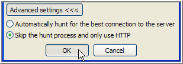
1.3 Configuring Your Personal Contact Information
It is a good idea to edit your own contact information and add any additional information you want other users to see.
To Set Up Your Contact Information:
-
From the main window, select the menu item.
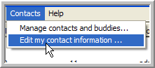The window appears.
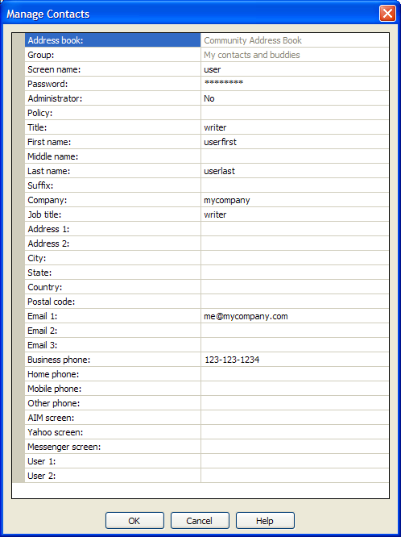 -
Edit your personal information (see the descriptions for the fields below).
Read-Only Fields
The following fields present information about your configuration. You cannot modify these fields.
-
- Lets you know whether your administrative policy allows you to use the Community Address Book, which is your global company-wide book.
-
- Lists the Group for a contact.
Informational Fields
The following fields allow you to enter information about yourself, your location and your contact information. It is not necessary to complete each field, however, your contact information can be viewed by others:
-
- Use this field to set up a salutation title, such as Mr., Ms., Dr., and so on.
-
- Your first name.
-
- Your middle name.
-
- Your last name.
-
- Use this field to identify a suffix, such as PhD, MD, Sr., III, and so on.
-
- Your company name.
-
- A job title or job description.
-
- A field used to identify an address.
-
- A field used to identify an address.
-
- Use this field to enter another phone number, such as a pager or second mobile phone number.
-
- Your state.
-
- Your country.
-
- Your postal or zip code.
-
- Your business phone number.
-
- Your home phone number.
-
- Your mobile or cell phone number.
-
- If your company uses telephone extensions, enter your extension. This extension is not used when dialing your business phone number.
-
- Your primary e-mail address.
-
- Your secondary e-mail address.
-
- An additional e-mail address.
-
- Field that is available to store additional information.
-
- Field that is available to store additional information.
Admin Only Fields
The following fields are available only to the Administrator:
-
- Name of user. This is the name used to sign on to the system. The Screen Name is case sensitive, cannot contain any spaces, and must be alpha-numeric.
-
- Password of user.
-
- Yes; No
-
- Settings and limits assigned to a user.
NOTE:To see which settings are affected see Section 4.0, Administration Policies.
1.4 Configure Your Follow Me Phone Number
The Follow Me phone number allows you to specify the phone number that the contacts in your Personal Buddy list should use to contact you (you can only see Follow Me phone numbers for contacts in your Personal Buddy list).
IMPORTANT:The Follow Me phone number feature is not available in this release.
To Add or Modify Your Phone Numbers:
-
Select menu item.
-
Add or modify the phone numbers in the , , , or fields.
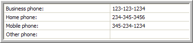 -
If you have an extension in your phone number type the letter “X” before the extension. For example, (351) 123 4321 x987.
NOTE:The extension field is not used by the server to dial phone numbers.
-
Once you have modified the information, click .
To Enable Your Follow Me Phone Number:
Use the drop-down menu via the Pidgin IM Client to select a phone number. Your is stored on the ICEcore Conference server so that other users know how to contact you even if your client is not running.
Follow Me Phone Numbers and Meetings
When scheduling meetings, you should use Follow Me phone numbers for both yourself and your contacts. ICEcore Conference automatically updates these numbers from the server if you or any contact changes their Follow Me number.
NOTE: If you specify a phone number when scheduling or editing your own meetings (including your Instant Meeting), the system does not automatically know where you are when you start the meeting. If you specify a phone number for a contact in one of your meetings, and that contact changes their Follow Me number, they may not receive a meeting message when you start the meeting.
1.5 Using Correct Phone Number Formatting
When editing or adding phone numbers, follow the same rules that ICEcore Conference uses to dial phone numbers:
-
7-digit numbers without area codes are treated as local calls.
-
10-digit numbers are in the North American dialing region.
-
Numbers that begin with a '+' sign have a country code following the '+' sign (e.g., +1 123-123-1234).
-
An international call is placed if the country code is not the North American region (country code = 1).
-
Numbers that begin with the international dialing prefix (011) are interpreted without the prefix as if they begin with a '+' sign (e.g., 011 1-123-123-1234 = +1 123-123-1234)
-
Numbers that contain an 'x' are have an extension after the 'x' (e.g., 123-1234 x 123).
-
ICEcore Conference dials extensions according to these rules:
-
If the user places a 1-to-1 call, the extension is not dialed. The expectation is that the caller provides the extension when the call is answered.
-
If the user places a conference call, the system dials the extension after the auto-attendant answers the call. After the dialing the extension, the system waits for the invitee to accept the meeting invitation.
-
Use the * and the # characters in a number to access auto-attendant functions (e.g., 123-1234*123).
-
Use a comma (,) to have the system pause briefly before dialing the remaining digits. (e.g., *89,123-1234)
-
ICEcore Conference only recognizes the (* # , x X) characters and digits 0-9 and ignores all other characters.
1.6 Installing the Pidgin Instant Chat Client
-
Download the pidgin.exe (Windows) or pidgin.rpm (Linux) executable file to your desktop.
After installing the Conferencing server, the Pidgin client with ICEcore Conference protocol support can be downloaded from the following URLs.
-
Windows: http://<conferencing-portal-hostname>/imidio/downloads/pidgin.exe
-
Linux: http://<conferencing-portal-hostname>/imidio/downloads/pidgin.rpm
These files (or file locations) should be provided to you via a URL (e-mail).
-
-
In Linux and Windows, double-click the (.rpm or .exe) installer (placed on the desktop during download), or select or to invoke the installer.
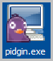NOTE:It may take a while for the installation to begin on the Linux desktop.
-
In the dialog that appears, select your language from the drop-down list.
NOTE:The installer wizard walks you through the installation process. The defaults should be fine for your install, though you may want to select the option.
-
Click to complete the installation process.
The integrated Pidgin instant chat client is now installed and ready for use.
NOTE:See the ICEcore Conference Online Help or the ICEcore Conference User Guide for information on using the integrated Pidgin client with ICEcore Conference.
1.6.1 Set Up Your Pidgin Client
-
Start Pidgin.
-
In the dialog that appears, click .
NOTE:If the dialog does not automatically appear, select the menu item from the Pidgin window.
-
Under the tab in the window:
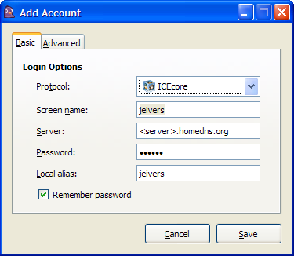-
Select ICEcore from the drop-down list.
-
Type in your ICEcore Conference screen name in the field.
-
Type in the ICEcore Conference server address in the field.
-
Type in your ICEcore Conference password in the field.
-
Type in the alias name you would prefer to use in Pidgin instant chat client.
-
Select the option to avoid typing in your password each type you start instant chat.
-
-
Under the tab, select the you want for importing your ICEcore Conference contacts:
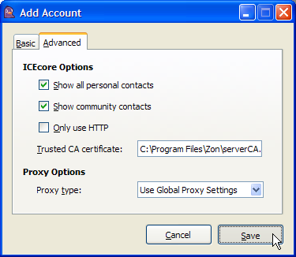-
Select to import all your personal contacts from ICEcore Conference.
-
Select to import all the contacts from the ICEcore Conference Community Address Book.
-
-
Click .
1.6.2 Access the Pidgin ICEcore Conference Features
Selects to view the ICEcore Conference menu items that are available:
-
- Select this menu item to edit your Pidgin ICEcore Conference account (see Set Up Your Pidgin Client above).
-
- Select this menu item to open the ICEcore Conference Main Window.
-
- Select this menu item to open the ICEcore Conference Manage Contacts and Users Window (see Configuring Your Contacts and Buddies).
-
- Select this menu item to start your ICEcore Conference Instant Meeting (see Running and Editing Your Instant Meeting).
-
- Select this menu item to disable your Pidgin ICEcore Conference account.
2.0 Configuring ICEcore Conference
This chapter describes how to configure ICEcore Conference and includes the following sections:
2.1 Configuring Your Preferences
Your preferences define the behavior for many available features. The following preference tabs are covered in this section:
2.1.1 To Set Your Preferences:
-
Select the menu item.
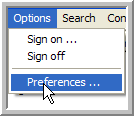 -
Select the tab for the preferences you want to edit:
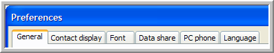-
- edit your and options.
-
- select the information (columns) you want to display for your contacts and the order that the columns appear.
-
- format the default text that appears in your Application and Chat windows.
-
- set data share preferences for your meetings.
-
- set PC phone preferences for your meetings.
-
- set your language preference.
-
-
To save your settings and close the window, click .
-
To close the window without saving, click .
2.1.2 General Preferences
-
Sign On/Off options:
-
- Select this option to save your password unless your policy setting prohibits this (to verify, check with your administrator).
-
- Select this option to automatically sign on when ICEcore Conference starts. You need to select the Save Password option before you select this option.
-
- Select this option if you want ICEcore Conference to automatically launch when your computer starts.
-
- Select this option to have ICEcore Conference automatically connect/reconnect to the server when it detects an error in the network.
-
-
Automatic Downloads on Startup options:
-
- Select this option to automatically download information on any public meetings when you start ICEcore Conference.
-
- Select this option to automatically download the Community Address Book information when you start ICEcore Conference.
-
2.1.3 Contact Display Preferences
Use the tab to configure the information (columns) that display for your contacts.
NOTE: This affects the and windows.
-
To display a column:
-
Select the column you want to display for your contacts in the list on the left (you can select more than one at a time).
-
Click the button to move the columns into the list on the right.
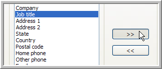NOTE:The more columns you select, the longer it take to populate the contact list when you start your client. Therefore, it is best to select only those columns you refer to regularly.
-
-
To select the order that the columns appear for your contacts:
-
Select a column in the list on the right.
-
Use the and arrows to change the columns display order (top position appearing first).
-
Repeat the previous steps to position all the columns in the correct display order.
-
2.1.4 Font Preferences
-
To set the application font:
-
Click .
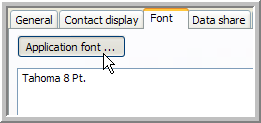 -
Select the , , , and you want to use.
-
Click .
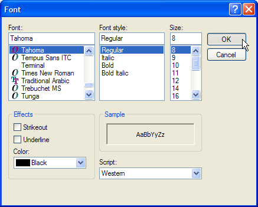
NOTE:The text pane below the button displays a sample of the application text.
-
-
To set the Chat default font, use the following chat font tools:
-
Set Foreground Color
-
Set Background Color
-
Decrease Font Size
-
Set to Normal Font Size
-
Increase font Size
-
Set to Bold
-
Set to Italics
-
Set to Underline
NOTE:The text pane below the chat font tools displays a sample of the chat text.
-
2.1.5 Data Share Preferences
-
- Select this option to hide the Meeting window when sharing in full-screen mode.
NOTE:This setting only takes effect if it is set prior to initiating a share session. Leave this setting off to share transparent windows. This setting has no effect for presenters running with Windows 98 (participants still see the Meeting window).
-
- Select this option to detect poor connections and reduce the data ICEcore Conference sends to the participants (the shared data does not look as sharp).
NOTE:A fast connection that comes up and down a lot, may be treated as a slow connection, so only use this setting if you anticipate participants with slow connections.
-
- Select this option to load shared graphics faster, but at a lower quality.
2.1.6 PC Phone Preferences
-
- Select one of these options to set the bandwidth for your PC phone.
-
- Select this option to enable echo cancellation (recommended).
NOTE:A fast connection that comes up and down a lot, may be treated as a slow connection, so only use this setting if you anticipate participants with slow or intermittent connections.
-
- Select this option to enable noise filter (recommended).
2.1.7 Language Preferences
Select the five letter code that corresponds to your language.
2.2 Understanding ICEcore Conference Concepts
This section describes the following topics:
2.2.1 Window Definitions
The Following list describes the primary windows in ICEcore Conference:
-
- The main console window open when you log in to ICEcore Conference and contains a list of all your meetings.
The meeting list has the following categories of meetings:
-
- Public, Private and unlisted meetings in your community (for administrators only).
-
- Public meetings in your community.
NOTE:Your administrator determines if you have the right to view public meetings or if you must use to locate public meetings.
-
- Your Instant Meeting.
-
- Your Scheduled Meetings.
-
- Meetings to which you are currently invited.
-
- A list of all your community meeting searches.
-
-
- Use the this window to set up a new meeting, start a scheduled meeting, or edit a scheduled meeting.
-
- Use this window to search through the community meetings.
-
- Use this window to view details for a specific meeting.
-
- Use this window when running or joining a meeting. This window contains information about participants and their in-meeting status and allows you to chat and share data during a meeting.
-
- Use this window to add contacts to a meeting from the window.
-
- Use this window to configure your ICEcore Conference preferences. See Configuring Your Preferences for details on using this window.
-
- Use this window to manage your contacts and personal buddies. See Managing Contacts and Buddies for details on using this window.
-
- Use this window to edit a contact’s information. See Editing a Contact’s Information for details on using this window.
2.2.2 Meeting PINs and Meeting IDs
You can use a Meeting PIN or a Meeting ID to enter a meeting for public and unlisted meetings. However, an attendee must have a Meeting PIN in order to access a private meeting.
The following are definitions for both Meeting PIN and Meeting ID:
-
- A personal identifier that the meeting server uses to represent a specific attendee in a specific meeting.
-
- A generic identifier that represents a specific meeting only (does not identify a specific attendee).
NOTE:Use the Meeting PIN to join meetings whenever possible so that the meeting server can identify you. You need to use the Meeting PIN to join any meeting where you plan to act as a moderator. If you join a meeting via phone using the Meeting ID, your name is listed as anonymous in the Meeting window.
2.2.3 Main Window
The Main Window is the place where you can find, create, start, join, and edit public meetings, your Scheduled Meetings, Invited Meetings and your Instant Meeting.
Meeting List Groups
Each meeting type is represented by its own group in the meeting list:
-
- Meetings that are marked as public indicate that they are available to anyone in the community. Public meetings are set by configuring the meeting type option when you schedule a meeting.
-
- Each user has one Instant Meeting available by default.
-
- The list of your Scheduled Meetings.
-
- Every Instant or Scheduled Meeting to which you are invited, including the following:
-
Scheduled Meetings where you are a persistent invitee.
-
Any in-progress Instant or Scheduled Meeting where you are an invitee (but not a persistent invitee).
NOTE:If the meeting is in-progress, the people icon on the left are green (this is referred to as meeting presence).
-
-
(for administrators only) - Lists all public, unlisted, and private meetings in your community.
Meeting List Column Headings
The Main Window displays the following information (columns) for your meetings:
-
- A generic identifier that represents a specific meeting, but does not identify a specific attendee.
-
- Your personal identifier for a specific meeting.
-
- The host's screen name (the user who created the meeting).
-
- The scheduled time of the meeting (You can start a meeting at any time, regardless of the scheduled start time).
-
- Indicates if a meeting is public, private, or unlisted.
-
- Indicates if there is a moderator present for this meeting.
Meeting List Options
The following options are available for your meetings:
-
Start - To start a meeting for which you are a moderator or the host, select the meeting, and then click (also available as a menu item under or by right-clicking). You must exit any meeting in which you are currently participating before starting another meeting.
-
Join - To join a meeting, highlight the meeting, and then click (also available as a menu item under or by right-clicking). If the meeting is not yet started, you get a waiting for meeting to start message. You are automatically brought into the meeting once a host or moderator starts it. You can also join a meeting by clicking on the invitation URL for that meeting.
-
New - To create a new meeting, click . Opens the window, so you can schedule a new meeting.
-
Edit - To edit a meeting, highlight the meeting, and then click (also available as a menu item under or by right-clicking). Opens the window, so you can edit a scheduled meeting. Only a host can edit a meeting (persistent moderators cannot edit meetings).
-
View - To view the window for a meeting, highlight the meeting, and then click (also available as a menu item under or by right-clicking).
-
Find - To find a meeting, click . Opens the window.
-
Copy - To copy an existing Scheduled Meeting as a template for creating a new Scheduled Meeting, right-click the scheduled meeting, and then select the menu item (also available as a menu item under ).
-
Delete - To delete a Scheduled Meeting (you cannot delete your Instant Meeting), right-click the scheduled meeting, and then select the menu item (also available as a menu item under ).
-
Refresh - To get an up-to-date meeting list, select the menu item. This checks the server for any meeting changes on your list.
-
Join by Meeting ID or PIN - To join a meeting using your Meeting ID or PIN, select the menu item. If you do not have a Meeting PIN (which you receive in your e-mail or IM invitation), you can use the Meeting ID.
Use the Meeting PIN to join meetings whenever possible so that the meeting server can identify you. You need to use the Meeting PIN to join any meeting where you plan to act as a moderator. If you join a meeting via phone using the Meeting ID, your name is listed as in the Meeting window.
2.2.4 Contacts and Buddies Definitions
The following are definitions for Contact and Buddy lists.
-
- Anybody that appears in one of your Contact Windows is a contact. Each Contact has information that you use to set up meetings or make phone calls.
-
A Community Contact is any contact that is visible in the Community Address Book.
Your administrator determines whether you have the right to view the Community Address Book or whether you must use to locate contacts.
-
A Community Contact is available to the entire community and is a Registered User (Community User) or just a Contact.
-
Use Manage Contacts and Buddies to identify Contacts and Community Users.
-
A Contact has a rolodex card icon while a Registered User has a light gray PC icon .
-
If a Registered User is also a personal buddy, the PC icon is dark gray .
-
You can modify your community contact information by configuring your personal contact information.
-
Only administrators can create and modify community contacts.
-
-
- Registered Users are contacts who have a registered screen name in your community or in another community. You can make a Registered User a Personal Buddy and view their presence information.
-
- Registered Users in the Community Address Book are Community Users. You can add Community Users to your personal buddy list and view their presence information.
-
- Personal Contacts are contacts that are available in your Personal Address Book and are visible only to you. A Personal Contact can be either a contact or a contact that is also a Registered User. Personal Contacts show up in the Manage Contacts and Users window in the group indented beneath the Personal Address Book.
-
- You can only add registered users to your personal group, which is listed under your Personal Address Book in the window. Making a registered user a personal buddy allows you to view their presence information.
-
-
- The Community Address Book by default contains one group ( ) that contains all contacts and users in your community.
-
- These are your Personal contacts, consisting of two groups ( and ):
-
- This group contains all users and contacts that exist in your Address Book.
-
- This group contains just those registered users you add as personal buddies. When you add users as personal buddies, they still show up in the group.
-
-
- Adds a group for each search you perform on the Community Address Book.
-
2.2.5 Communities
A community is a group of users, usually within the same company. All contact information for community members automatically shows up in the Address Book in your windows.
Contacts within a community are not automatically your buddies and therefore do not automatically broadcast presence. You must make a contact a Personal Buddy in order to view presence for that contact.
NOTE:A contact must be a registered user for you to add them as a personal buddy.
The Address Book by default contains one group ( ) that contains all contacts and users in your community. If a community administrator has created any other groups, they are also visible. If a user or contact belongs to a specific group under the Address Book (for example, co-workers), they are still visible in the group.
NOTE:Your administrator determines whether you have the right to view the Address Book. Preventing the download of this Address Book can enhance performance for users in very large organizations.
2.2.6 Presence
Presence is information that is distributed to other users indicating if you are available or present. The most common example is Instant Messaging (IM) presence or PC presence. When you are actively using your PC, the IM system can send out information to let others know that you are at your PC. This information is typically conveyed via an icon next to your name. The icon would indicate if you are online, offline or busy.
PC Presence
ICEcore Conference collects PC presence from the IM system and displays it in a PC-shaped IM icon next to each contact. If you are getting presence for a contact from the IM or ICEcore Conference system for a particular contact, the icon is green ( ).
There are three distinct presence states (OFFLINE, AWAY, and AVAILABLE):
-
If a contact is signed on and available in the IM system, they show up as AVAILABLE.
-
If a contact is signed off in the IM system, they show up as OFFLINE.
-
If a contact is set to AWAY in the IM system, they show up as AWAY.
NOTE:When a buddy is away, busy, or idle, you see a yellow notepad on top of the green PC icon (busy, away, idle). A dark gray PC icon indicates that you are not getting presence from the IM system for that contact. A light gray PC icon indicates that the contact is not a personal buddy (you only receive presence information for your Personal Buddies).
Meeting Presence
In the Meeting window, if the presence icon next to a contact is green ( ), the contact is in the meeting. If the icon is gray (light or dark) the contact is not in the meeting.
Phone Presence
In the Meeting window, if the middle icon is green ( ), the contact is on the phone in a meeting. If the icon is gray (light or dark) the contact is not on the phone in the meeting.
The phone icon has the following additional states:
-
To indicate that the contact is dialing a “!” precedes the phone icon.
-
A red line through the phone icon indicates that the contact has muted their phone.
-
A white “talk bubble” displaying instead of the green phone indicates the meeting participant is actively speaking.
NOTE: In the window you see phone presence for all meeting participants. In the window you only see phone presence for a personal buddy.
Enabling Presence
You must make a contact (who is a registered user) a Personal Buddy in order to see any presence from the ICEcore Conference system.
2.2.7 Meeting Roles
Participant
Any person participating within a meeting.
Host
The user who creates a meeting.
Moderator
-
A moderator is a participant who can control all aspects of a meeting.
-
The Host can make any meeting participant a moderator on a persistent or temporary basis.
-
You can view a moderator’s status in brackets, , following the participant’s name in the window.
NOTE:An administrator can join any meeting and always has persistent moderator privileges.
Persistent Moderators:
-
To make a participant a persistent moderator, assign them moderator privileges in the window when you schedule the meeting (you can also edit the meeting, but you must save your changes before starting the meeting).
-
You can remove a participant’s moderator privilege temporarily during any meeting.
-
A persistent moderator for a scheduled meeting can start the meeting from the Main window. The host does not need to be present.
-
A persistent moderator for a scheduled meeting cannot edit the scheduled meeting.
Temporary Moderators:
You can assign a temporary moderator when starting a meeting or during a meeting. The next time the meeting is run, the temporary moderator privilege does not persist.
Administrator:
-
An administrator can join any meeting and always has persistent moderator privileges.
-
Administrators can add, edit and delete users from the Managing Contacts and Users window.
-
Administrators can view the list of meetings and join any public, private, or unlisted meeting.
-
To prevent an administrator from attending a specific meeting you must lock the meeting.
Presenter:
-
The participant who currently has the ability to share data is the presenter.
NOTE:Administrators determine who has the right to share various types of data (Documents, the Whiteboard, Applications, etc.).
-
The presenter is the only participant to have the available ( ).
-
The text displays next to the presenter’s name in the window.
-
You can only assign one presenter at any given moment.
Remote Control Privilege (Remote Controller):
-
Grants a participant the ability to control the presenter’s PC share session from a remote mouse and keyboard.
-
You can grant multiple users Remote Control Privileges.
NOTE:Administrators determine who has the right to control a presenter’s desktop or application.
-
Once a participant is granted control, they need to click on their screen to begin controlling the presenters share session.
-
The Presenter always has Control privileges.
-
A round cursor is indicative of the remote controllers cursor. The presenter’s cursor follows the remote cursor as it moves.
-
The presenter must be careful to minimize all non-shared windows when allowing remote controllers, because a remote controller may end up clicking on or typing into a window that they cannot see.
NOTE:ICEcore Conference attempts to minimize all non-shared windows when a remote controller clicks on them, but cannot minimize windows with open dialogs nor certain specialized windows. In the event that this occurs, the window in question flashes in the MS Windows toolbar.
-
The text displays next to the remote controller’s name in the Meeting Window.
2.2.8 Phone/Touch Tone User Interface
The following table describes features of the phone/touch user interface.
NOTE:None of these options make persistent changes to the meeting. To make persistent changes, you must edit the meeting in the window.
2.3 Configuring Your Contacts and Buddies
This section contains the following topics:
2.3.1 Adding and Removing Buddies
To add a registered user from your community to your Personal Buddy list:
-
Select the menu item.
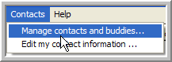 -
Select one or more contacts from any group under the Address Book in the Window (use the CTRL or SHIFT key to select multiple contacts).
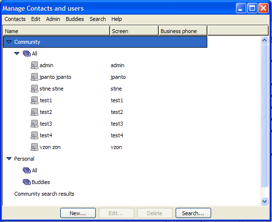NOTE:If you do not see the Address Book, your administrator did not give you permission to view it. Instead, use Search to locate potential buddies.
-
Right-click on one of the selected contacts and select the menu item.

NOTE:You can view all your Personal Buddies under the Address Book. You can only have a limited number of Personal Buddies. The number is controlled by your personal policy setting. To find the maximum number of personal buddies you can add consult your system administrator or service provider.
Adding a Non-Community User to Your Personal Buddy List
To add a registered user that is not a member of your community to your Personal Buddy list:
-
Select the menu item.
-
Right-click on the and select the menu item.
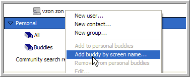 -
Type the contacts screen name into the dialog and click .
NOTE: You can use this same technique to add a Address Book contact to your Personal Buddy List.
To Remove a Contact From Your Personal Buddy List:
-
Find the buddy you want to remove under your Buddy List.
-
Right-click on the buddy and select the menu item.
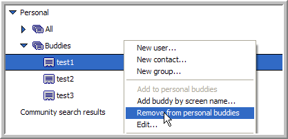
2.3.2 Searching the Community Address Book
ICEcore Conference allows you to search the Address Book for contacts. This feature is particularly helpful when your organization is large (which results in a large Address Book) or when your administrator has set a policy that prohibits the downloading of the Address Book.
To Search the Community Address Book For a Name:
-
Select the menu item.
-
At the bottom of the window, click
The window appears.
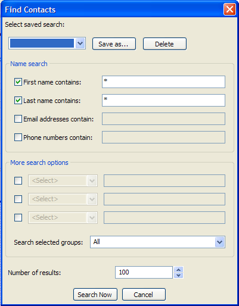 -
In either the or fields, type a few characters of the contact’s first or last name depending on which field you use.
Use the asterisk (*) as a wild card before or after the text string.
For example, if you type da* into the field, ICEcore Conference returns contact listings for names like David and Darren. If you type in *da, ICEcore Conference returns contact listings for names like Brenda and Linda.
-
Deselect the name field you are not using.
NOTE:Using both name fields does not narrow your search down (each search option you use finds the matching contacts for that option and adds them to the final search results. See “Additional Search Options” below.
-
Click .
Under the Address Book, ICEcore Conference adds a group for this search containing the contacts that match your search criteria.
NOTE: If the entire search criteria does not display in the group’s name, hover the mouse over the group name and the mouse-over popup displays the entire search criteria.
To Delete a Search Results Group:
Right-click on a search results group and select the menu item.
To Edit a Search Results Group:
-
Right-click on a search results group and select the menu item.
-
Make your changes to the search criteria in the window, and then click .
Additional Search Options
ICEcore Conference returns the contacts that match any of the search options you use.
The window includes the following search options (use the asterisk (*) as a wild card for all options):
-
- Enter a few characters of an e-mail address.
-
- Enter a few characters of a phone number.
-
To use this option, do the following:
-
Select one of the “ ” sections.
-
In the field, select the contact information field you want to use (see Editing a Contact’s Information for additional information on these fields).
-
Type in a few characters of the contact information you are using.
-
Deselect any search options you are not using.
-
Click .
-
-
- Use this option to search a specific address book ( All is the default value).
-
- Use this option to specify the number of contacts to display under the search results group for this search. To display additional contacts for the group, right-click the group and select the menu item.
2.3.3 Managing Contacts and Buddies
Before you begin configuring contact and buddy lists, you may want to become familiar with the types of contacts, see Contacts and Buddies Definitions.
To open the window, select the menu item.
What Can You Manage?
-
You can only add or edit contacts in your Address Book.
-
Only administrators can add and edit contacts in the Address Book.
-
You can create new groups under you Address Book, see Managing Address Book Groups.
To Add a Personal Buddy From the Community Address Book:
-
Select one or more registered users (designated by the PC icon ).
You cannot add non-registered contacts (designated by the rolodex icon ) as Personal Buddies.
NOTE: If your Address Book is not visible in your window, your administrator has not given you the rights to download this address book. Use the tool, instead.
-
Select the menu item.
The registered users you select are added to your group.
NOTE: If you tried to add any non-registered contacts, they are not added to your group.
To Add a Personal Buddy by Name:
-
Select the menu item.
-
Type in the screen name and click .
Your new personal buddy appears in your group under the Address Book.
To Add a Contact to the Community Address Book (Administrator Only):
-
Select the Address Book, or a group under it.
If you select the Address Group, the contact goes into the group, otherwise the contact goes into the group you select.
NOTE: If your Address Book is not visible in your window, your administrator has not given you the rights to download this address book. Use the tool, instead.
-
Click and select the menu item.
-
In the contact information window that appears, fill out the contact’s information, and then click .
For information on field definitions see Editing a Contact’s Information.
To Add a Contact to Your Personal Address Book:
-
Select the address book or any group beneath it (with the exception of the group marked Buddies).
If you select the , the contact goes into the group, otherwise the contact goes into the group you select.
-
Click and select the menu item.
-
In the contact information window that appears, fill out the contact’s information, and then click .
For information on field definitions see Editing a Contact’s Information.
To Copy Contacts:
-
Select one or more contacts from any group.
-
Select the menu item.
-
Select the group into which you want to copy the contacts.
-
Select the menu item.
NOTE:Only administrators can make changes to the Address Book.
To Delete Contacts:
-
Select one or more contacts.
-
Click .
-
In the confirmation dialog that appears, click to delete the contacts.
2.3.4 Managing Address Book Groups
To open the window, select the menu item.
To Add a Group to Your Personal Address Book:
-
Select the Address Book.
-
Click and select the menu item.
-
When the new screen appears, type in the group name and click .
To Add a Group to the Community Address Book (Administrators Only):
-
Select the Address Book.
-
Click and select the menu item.
-
When the new screen appears, type in the group name and click .
To Delete a Group:
-
Select the group you want to delete.
-
Click .
-
In the confirmation dialog box that appears, click to delete the group.
NOTE:Only administrators can add or delete groups in the Community Address Book.
2.3.5 Editing a Contact’s Information
It is a good idea to edit your contacts’ information and add any additional information you want to save.
To Edit Contact Information:
-
Select the menu item.
-
In the window, select the contact you want to edit.
-
Click .
The window appears.
-
Edit the contacts information (see the descriptions for the fields below).
-
Click .
Read-Only Fields
The following fields present information about your configuration. You cannot modify these fields.
-
(read only) - Lets you know whether your administrative policy allows you to use the Address Book, which is your global company-wide book.
-
(read only) - Lists the Group for this contact.
Informational Fields
The following fields allow you to enter information about your contact. It is not necessary to complete each field:
-
Title - Use this field to set up a salutation title, such as Mr., Ms., Dr., and so on.
-
First Name - Contact’s first name.
-
Middle Name - Contact’s middle name.
-
Last Name - Contact’s last name.
-
Suffix - Use this field to identify a suffix, such as PhD, MD, Sr., III, and so on.
-
Company - Contact’s company name.
-
Job Title - A job title or job description.
-
Address1 - A field used to identify an address.
-
Address2 - A field used to identify an address.
-
State - Contact’s state.
-
Country - Contact’s country.
-
Postal Code - Contact’s postal or zip code.
-
Business Phone - Contact’s business phone number.
-
Home Phone - Contact’s home phone number.
-
Mobile Phone - Contact’s mobile or cell phone number.
-
Other Phone - Use this field to enter another phone number, such as a pager or second mobile phone number.
NOTE:See Using Correct Phone Number Formatting for information on entering phone numbers.
-
Extension - If your contact’s company uses telephone extensions, enter the contact’s extension. This extension is not used when dialing their business phone number.
-
Email - Contact’s primary e-mail address.
-
Email2 - Contact’s secondary e-mail address.
-
Email3 - An additional e-mail address.
-
User1 - Field that is available to store additional information.
-
User2 - Field that is available to store additional information.
Admin Only Fields
The following fields are available only to the Administrator:
-
- Name of user. This is the name used to sign on to the system. The Screen Name is case sensitive, cannot contain any spaces, and must be alpha-numeric.
-
- Password of user.
-
- Yes; No
-
- Settings and limits assigned to a user.
NOTE: To see which settings are affected see Administration Policies.
3.0 Working with Meetings
Meetings are methods of connecting with other people. You can create meetings with any number of contacts, groups, or companies.
The following sections describe how to work with meetings:
3.1 Running and Editing Your Instant Meeting
Your Instant Meeting is a meeting that has no pre-defined participants or scheduled starting time. You start your Instant Meeting at the time you want to hold the meeting. An Instant Meeting can involve a phone call, conference, calls, chat and sharing data. You can create a Scheduled Meeting and omit the start time to reproduce the functionality of an Instant Meeting.
To Start an Instant Meeting:
-
In the meeting list, select under .
-
Click .
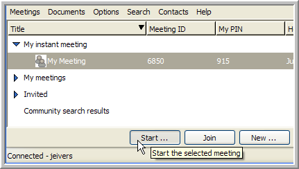The window appears.
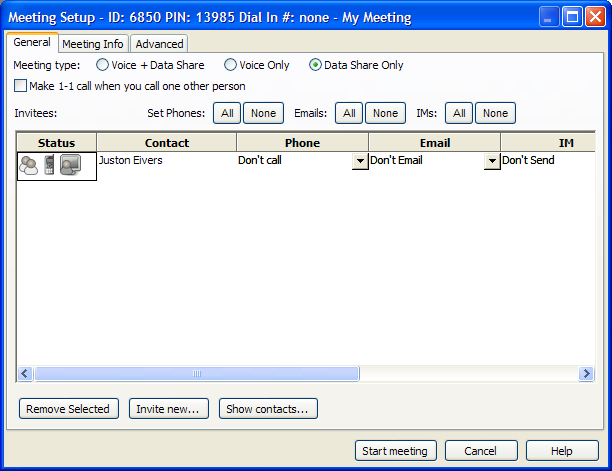 -
Add your contacts, see Adding and Removing Meeting Invitees.
-
Configure the meeting options, see Editing the Meeting Options.
-
Click .
To Edit Your Instant Meeting Settings:
-
In the meeting list, select under .
-
Click .
The window appears.
-
Configure the meeting options, see Editing the Meeting Options.
NOTE:Since this is your instant meeting, you should not unselect the option under the tab.
-
Click .
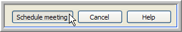 -
In the dialog that appears, click .
3.2 Running and Editing a Scheduled Meeting
A Scheduled Meeting is a meeting that can have pre-defined participants and an optional scheduled starting time. If you create a Scheduled Meeting with a schedule time, the time is placed in e-mail invitations that go out to meeting participants. You can start a Scheduled Meeting at any time, regardless of the time its scheduled. A Scheduled Meeting can involve a phone call conference, calls, chat and sharing data.
NOTE:If you make an invitee a moderator to a Scheduled Meeting, the invitee becomes a persistent moderator who can start, but not edit, your Scheduled Meetings. For more information see Meeting Roles.
To Create a New Scheduled Meeting:
-
Click .
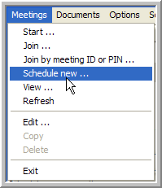The window appears.
NOTE: The Meeting ID and Meeting PIN remain blank until the meeting is scheduled.
-
Add your contacts, see Adding and Removing Meeting Invitees.
-
Configure the meeting options, see Editing the Meeting Options.
-
Click .
-
If you selected e-mail notifications, a dialog appears for pre-sending meeting invitations:
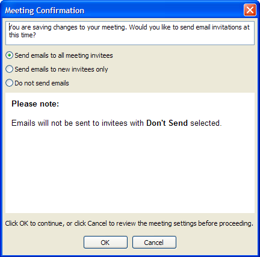-
Select to send invitations to everyone invited, even if they have previously received e-mail invitations.
-
Select to only send invitations to invitees you just added.
NOTE:With a new meeting, all invitees are new, so invitations go to everyone.
-
Select if you do not want any e-mail notifications sent.
Click .
-
To Start a Scheduled Meeting:
-
Select one of your Scheduled Meetings or a meeting where you are a designated moderator (look for the in the Moderator column).
-
Click .
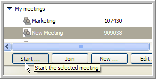The window appears.
-
Add any additional contacts you want to invite to the meeting, see Adding and Removing Meeting Invitees.
-
If necessary, edit the meeting options, see Section 3.4, Editing the Meeting Options.
-
Click at the bottom of the window.
To Edit Settings for a Scheduled Meeting:
-
Select one of your Scheduled Meetings.
-
Click to bring up the window.
-
Edit your contacts, see Adding and Removing Meeting Invitees.
-
Edit the meeting options, see Section 3.4, Editing the Meeting Options.
-
Click .
3.3 Adding and Removing Meeting Invitees
To add contacts to a meeting, you have to open the Select Contacts window from the Meeting Setup window and add all the contacts and groups you want to invite to the meeting. You can also add someone who is not a contact from the Meeting Setup window, see below.
To Invite Contacts or Groups to a Meeting:
-
From the window, select

-
In the window, select the contacts and groups you want to invite to your meeting (use the Ctrl and Shift keys to select multiple contacts and groups).
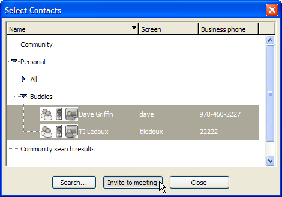 -
Click .
The window closes and the contacts and groups you selected appear in the list of the window.
To Invite Someone Who is Not a Contact:
-
From the window, select
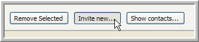A contact window appears.
-
Fill out the new contact’s , and information.
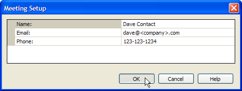 -
Click .
The contact information window closes and the new contact appears in the list of the window.
To Remove an Invitee or Group From Your Meeting:
-
In the window, select the Invitees and Groups you want to remove from the list (use the Ctrl or Shift keys to select multiple Invitees and Groups).
-
Click .
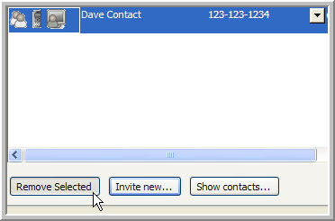 -
The Invitees and Groups you selected are removed from the meeting.
3.4 Editing the Meeting Options
Meeting Options can be set in the window when starting or editing a meeting, or to modify a running meeting.
NOTE: If you change meeting options when starting a meeting or for a running meeting, the new settings are only in effect for that specific meeting. When you run the meeting again, it reverts back to the last settings you saved for the meeting.
There are three tabs in the window:
-
General Meeting Options - Set the meeting type, phone, e-mail, IM, and moderator options in this tab.
-
Meeting Info Options - Set the meeting title, description, invitation message, and meeting time in this tab.
-
Advanced Meeting Options - Set the meeting privacy, password, advanced meeting options, display, and chat settings in this tab.
3.4.1 General Meeting Options
The following options are available on the Tab of the window:
-
This option lets the invitees know in their e-mail or IM invitation what type of meeting it is. Regardless of the setting, any meeting can share voice and data if necessary.
There are three meeting types:
-
Voice & Data Share
-
Voice Only
-
Data Share Only
-
-
When you select this option and call one other person, your phones are directly connected in a private sub-meeting. See Making Phone Calls for more information.
NOTE: 1-to-1 calls do not dial extensions.
Consider the following when you select this option:
-
If you are calling no other people, you are placed in a private sub-meeting by yourself.
-
If you call two or more people, a conference call is placed to all parties who are not currently on the phone.
NOTE:When you do not select this option, all calls are conference calls.
-
-
There are two options (buttons):
-
- Click to call all invitees when the meeting starts.
-
- Click to place no calls when the meeting starts.
These options override the current values in the column for all invitees. You can select each invitee's phone number individually using this field, or select the option to manually type in a number.
NOTE:The Follow Me Phone Number is only available to Personal Buddies. As soon as a personal buddy’s Follow Me Phone Number changes, it immediately becomes available to you. You need to re-start the client to get any updated numbers for registered users who are not personal buddies.
-
-
There are two e-mail options (buttons):
-
- Click to send all invitees e-mail invitations when you schedule or start the meeting.
-
- Click to send no e-mail invitations.
These options override the current values in the column for all invitees. You can select each invitee's e-mail address individually using this field, or select the option to manually type in an e-mail address. The e-mail invitation the invitees receive contains a link to the meeting.
-
-
There are two IM options (buttons):
-
- Click to send all invitees IM invitations when you start the meeting.
-
- Click to send no IM invitations.
These options override the current values in the column for all invitees. If the invitee is a ICEcore Conference user and is online at the time the invitation is sent, the invitee receives a pop-up invitation with a link to the meeting.
NOTE: If you are invited to two or more meetings via IM invitations before responding, you only see the last invitation. To join an ongoing meeting from a previous invitation, go to your window and find the desired meeting.
-
-
(check box on column)
Select this option to configure an invitee as a moderator. Once a meeting commences, the moderator privilege can be granted or revoked using the menu items.
NOTE:The host of the meeting always enters the meeting with the moderator privilege regardless of how the check box is set in the meeting setup window.
3.4.2 Meeting Info Options
The following options are available from the Tab:

-
The meeting title is included in IM and e-mail meeting invitations and is displayed in the window. If it is a public meeting, you may want to include your name as part of the meeting title so others know you are the host.
-
Description is a detailed description of the meeting. The description is included in IM and e-mail meeting invitations.
-
An additional text description that is part of the invitation. It does not show up in the meeting list.
NOTE:If you intend to send IM invitations, it is best to keep the content of the text in title, description and message short since IM systems limit message size.
-
You can select the option to configure the meeting as a floating meeting for you and the invitees or you can select a and for the meeting.
3.4.3 Advanced Meeting Options
The following options are available on the Tab:
-
:
-
Private meetings do not show up in meeting lists (unless you are an invitee or it is your own private meeting) and you cannot join anonymously (e.g., with a Meeting ID). You must use a valid Meeting PIN (found in your e-mail or IM invitation) to join a private meeting.
-
Anyone can join a public meeting. Public meetings show up in the meeting list for all users in your community.
NOTE:If the administrator disables the display of these meetings, use the tool to view public meetings. See Administration Policies for more information.
-
Anyone can attend unlisted meetings, but you must know the Meeting ID in order to join the meeting. Administrators can see all unlisted meetings in their window.
NOTE:Unlisted is often the best choice for an Instant Meeting. It allows you to give the Meeting ID to people, but the meeting never appears in a users meeting list unless you invite them.
-
-
Adds an additional layer of security. When you use a meeting password, all invitees must know the password to get into the meeting. The number of digits is defined by policy. The moderator or meeting owner can view the password in the window.
-
-
Select this option to allow a meeting to remain in-progress when no moderator is present. If this option is not selected, the meeting immediately ends when the last moderator leaves the meeting.
-
Select this option to allow moderators to edit the options for a meeting after it has started.
-
Select this option to prompt each invitee for their name as they join the meeting. Each invitee's name is announced as they join and when they leave the meeting.
-
(Non-moderators are Muted)
Select this option to run a meeting as a lecture. Only moderators are active participants while this option is set.
-
Select this option to enable the recording of this meeting.
-
Select this option so that any invitations you send during the meeting are only valid for the current meeting. If you end the meeting and then restart it, invitations for the earlier session of the meeting are no longer valid. This does not effect invitations to users who are persistent invitees of Scheduled Meetings.
When you do not select this option, you can set an expiration time for instant invitees during which they can join any session of the meeting. For example, if you set an expiration time of 24 hours, instant invitees can join the meeting any time within that 24 hour window no matter how many times you start and stop the meeting. An expiration time of 0 hours is equivalent to invitations being valid only for the duration of the current meeting.
-
-
There are three display options available:
-
- Do not show attendee names in the Meeting window to non-moderators.
-
- Show only the names of moderators in the meeting to non-moderators.
-
- Show all attendee names to non-moderators.
NOTE:All attendee names are always shown to moderators, independent of this setting.
-
-
There are three chat options:
-
- Do not allow any chat for non-moderators.
-
- Only allow participants to chat with moderators.
-
- Allow any participant to send a chat message to any other participant.
-
3.5 Joining a Scheduled Meeting
To Join a Meeting:
-
Select the meeting you want to join.
-
Click .
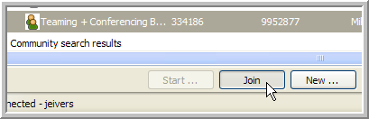You are brought into the meeting.
NOTE: If there is no host or moderator present in the meeting, a dialog appears informing you that you need to wait for a host or moderator to join the meeting.
To Join a Meeting by Meeting ID or PIN:
-
Select the menu item.
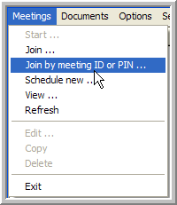The dialog appears.
-
Type the Meeting ID or PIN number into the field in the dialog.
NOTE:Use the Meeting PIN to join meetings whenever possible so that the meeting server can identify you. You need to use the Meeting PIN to join any meeting where you plan to act as a moderator. For more information see Meeting PINs and Meeting IDs.
-
Click .
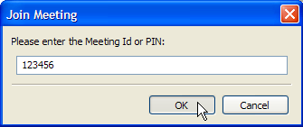You are brought into the meeting.
NOTE:If there is no host or moderator present in the meeting, a dialog appears informing you that you need to wait for a host or moderator to join the meeting.
3.6 Finding a Community Meeting
ICEcore Conference allows you to search the group. This tool is particularly helpful when your organization conducts many meetings or if your administrator disables the display of public meetings.
NOTE:You can save any search you run for later user.
To Search the Community Meetings:
-
Click at the bottom of the Meetings List window.
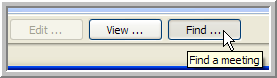The Meeting Search window appears.
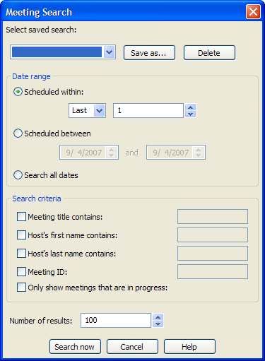 -
To save the search, click , type in a name for your search, and then click .
NOTE:Saved searches appear in the Search Name drop-down list.
-
Select a Date Range:
-
Select the option (default) to search within a given number of days in the past or future:
-
In the first drop-down list, select to search future meetings or Last to search past meetings.
-
In the second field, specify the number of days within which to search.
-
-
Select the option to search between two specific dates:
-
In the first field, specify the start date for your search.
-
In the second field, specify the stop date for your search.
-
-
Select the option to search through all meetings.
-
-
Select the for your search (you can select multiple options to narrow your search down):
-
To search the meeting titles for specific text, select the option and type the text you are searching for into the corresponding field.
-
To search the meetings based on the host’s first name, select the option and type the first name into the corresponding field.
-
To search the meetings based on the host’s last name, select the option and type the last name into the corresponding field.
-
To search for a specific meeting ID, select the option and type the Meeting ID into the corresponding field.
-
To limit your search to meetings that are in progress, select the option.
-
-
To configure the number of results you want to retrieve for this search, type a number into the field (default is 100).
-
Click .
The results for the search are displayed in a group under . If there are additional search results beyond the limit you specified, right-click on the search results group and select the menu item.
To Delete Search Results:
Right-click on the search group you want to delete and select the menu item.
To Edit a Search Result Group:
Right-click on the search group you want to edit and select the menu item. The window appears with that search’s configuration.
To Run a Saved Search:
-
Click at the bottom of the window.
The window appears.
-
Select the saved search you want to run from the drop-down list.
-
Make any configuration changes you want.
-
Click .
3.7 Viewing Meeting Details
To view details for a specific meeting, right-click on the meeting and select the menu item.
The window appears.
This window contains the following information:
-
This includes the following:
-
Meeting title
-
Host name
-
Dial-in #
-
Meeting ID
-
PIN #
-
Password
-
Meeting Date/Time
-
Privacy
-
Your Moderator Status
-
-
The meeting description, see Meeting Info Options.
-
The invitation message, see Meeting Info Options.
3.8 Making Phone Calls
Make phone calls by starting a Voice Only meeting with the invitees you want to call. You can also call a predefined list of people in a Scheduled Meeting by starting the Scheduled Meeting as a Voice Only meeting. Once you have made calls, you can always send invitations to have your callers join a data meeting.
Call types
There are two types of calls that you can make:
-
A two party direct call between you and one other person. Both phones are dialed up and connected by the Voice Server. 1-to-1 calls place you in a private sub-meeting. See General Meeting Options for more information.
-
A voice only meeting with three or more people connected by the Voice Server. The Voice Server asks each person to “press 1 to join the meeting.” See General Meeting Options for more information.
To Move to a Conference Call From a 1-to-1 Call
(Moving from a Sub-meeting to the Main meeting):From the Window, select the S menu item. All users are moved into the group.
To Call a Meeting Member from the meeting window (1-to-1 call):
-
Right-click on a participant from the Meeting Window.
-
Select .
-
Select or enter a phone number to call the participant. A 1-to-1 call is made between the selected phone number and your Follow Me phone number. You are placed in a private sub-meeting inside the Meeting Window. If you are already on the phone and in a meeting, you are not re-called, but connected to the outbound invitee call.
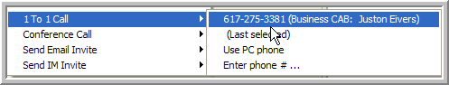NOTE:Once you are connected to the Voice Server (whether it called you, or you called in) you can make as many calls as you wish without hanging up by using 1-to-1 calls from the Meeting Window. Caller privileges for calls made via the menu are taken from the settings stored in your Instant Meeting.
To Conference Multiple Parties in an Instant Meeting:
-
Start your instant meeting. The meeting setup dialog appears.
-
Invite the people you want to have a conference call with, see Adding and Removing Meeting Invitees.
-
If you have only two invitees and wish to make a 1-to-1 call, select the option, otherwise you connect via a conference call. Calls with three or more invitees are always conference calls, regardless of this option.
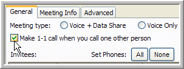 -
Next to , click to call the invitees’ default phone numbers. Double-check these numbers and make sure they are set correctly. See Editing the Meeting Options for more information.
-
Click .
NOTE:You can call all of the parties in a Scheduled Meeting by selecting a conference call from the button or the Window and following the steps in this section for configuring the .
3.9 Using the PC Phone Feature
Currently only the buttons in this pane are functional; other call options are not implemented. This pane is only displayed when connected to a server with voice support enabled.
If you experience audio problems on Linux, trying adjusting the audio levels and enabled devices. If this does not work, try switching from the OSS to the ALSA sound system; this selection is available from the tab in the dialog ( ).
There are three functional buttons for the pane in your window:
-
Connect - Click to use your PC Phone to connect to the meeting.
-
Dial - Click to make a call to a specific number using your PC Phone while you are in a meeting.
-
Audio Properties - Click to edit/configure your computer’s audio properties.
3.10 E-mail and IM Invitations
E-mail and IM Invitations can be sent out when meetings are scheduled and when meetings are started. The invitations contain a clickable link. When an invitee clicks on the link, they are brought directly into the meeting (assuming the meeting is already started).
Meeting invitations can be configured under the tab in the window.
About the Meeting Invitation Link
The link is for a web page which displays details about the meeting, including the invitee’s meeting PIN, the meeting title and description. The web page also brings the invitee directly into the meeting as follows:
-
If you are a registered user already running the client and signed on, the Window opens.
-
If you are a registered user, but are not running the client, the window opens. After you sign on, the opens.
-
If you are not a registered user, you are signed on as an non-registered user and brought into the Window after providing information.
NOTE: If the invitee does not have ICEcore Conference installed, then the web page brought up by the link installs ICEcore Conference (Microsoft Internet Explorer running ActiveX only). Clicking on the link connects you to the meeting. The meeting must be started by either a host or moderator before you are brought to the Window.
Invitation Expiration Times
Meeting invitations are only valid for certain time periods depending on how the meeting settings as configured by the host. See Editing the Meeting Options for details.
3.11 Meeting Window
Participants inside the Window are shown with a number of attributes to the right of the participant name, including the following:
-
Meeting PIN - designated by . Meeting PINs are only visible to moderators. Participants are not able to view the host's PIN.
-
Presenter status - .
-
Remote control status - .
-
Moderator status - .
-
Host status - .
See Meeting Roles for more information.
3.12 Meeting Window Menus
The following window menus are available:
3.12.1 Meeting Menu
The Meeting menu in the Meeting Window offers options that affect or provide information about the whole meeting. Some menu items are only available to moderators. These options show up as gray under the Meeting menu if you are not a moderator or administrator.
Meeting Menu Items:
-
(moderators only)
Select this option to edit the and options. SeeEditing the Meeting Options for details.
-
Select this option to view the window.
-
(moderators only)
Select this option to lock the meeting so that no new participants can join (a check mark appears to the left of the menu item to indicate that the meeting is locked). Select the menu item again to unlock the meeting (the check mark disappears).
-
(moderators only)
Select this option to mute all non-moderator (and host) participants and disable phone exit and entry announcements and tones (a check mark appears to the left of the menu item to indicate that it is active). Select the menu item again to deactivate this option (the check mark disappears).
In lecture mode a moderator can un-mute any meeting participant. Large meetings may be conducted by turning lecture mode on, and setting the meeting options so that chat is limited to moderators only and participants are only displayed to the moderators. See Editing the Meeting Options for details.
-
(moderators only)
Select this option to disable phone exit and entry announcements and tones (a check mark appears to the left of the menu item to indicate that it is active). Select the menu item again to deactivate this option (the check mark disappears).
-
(moderators only)
Select this option to play a list of the recorded names for all the participants via the phone. Each name is recorded when a participant joins a meeting if the option in your is set.
-
Select this option to raise your hand in the meeting and let the moderator know that you have a question or comment. This option is very important in large meetings where participants may be muted and you can only speak when the moderator un-mutes you.
-
(moderators only)
Select this option to take an Audio recording of the conversation in the Main Meeting Group of the Meeting Window (a check mark appears to the left of the menu item to indicate that it is recording). Select the menu item again to stop recording (the check mark disappears).
The feature does not record any conversation inside of sub-meetings with one exception: if the meeting was started with a 1-to-1 call so there is only , this sub-meeting is recorded until the moderator who initiated the recording is moved from the sub-meeting into the main meeting, at which time the main meeting is recorded. If a recording for a given meeting is stopped and started multiple times, each subsequent recording is appended to the previous recording.
-
(moderators only)
Select this option to have a link to the recording e-mailed to you.
-
(moderators only)
Select this option to erase any previous recordings for this meeting.
-
Select this option to leave the meeting.
If you are a moderator and there are participants left in the meeting, the dialog appears:
-
Select the option to end the meeting for all participants immediately.
-
Select the option to allow the meeting to continue (if there are no moderators left in the meeting, select the sub-option to allow the meeting to continue).
-
3.12.2 My Phone Menu
The menu items control your phone options.
My Phone Menu Items:
-
Select this menu item to have the meeting server call your phone. Select the number you want the server to call from the drop-down list that appears, or select to type in the number you want the server to call.
-
Select this menu item to mute your phone.
-
Select this menu item to change the volume on your phone.
-
Select this menu item to hang up your phone connection.
-
Select this item to connect via a PC Phone.
3.12.3 Participants Menu (Moderators only)
The menu items are only available to moderators.
Moderators can use the following Participants menu items:
-
Select this menu item to invite a new participant to the meeting. The window opens.
-
Select one or more participants who have not yet joined the meeting, and then select this menu item to invite them to the meeting. The window opens.
NOTE:To invite everyone who has not yet joined the meeting, select the group, and then use the menu item.
-
Select a participant, and then select this menu item to make the participant a presenter ( appears next to the participant’s name).
There can only be one presenter at a time.
-
Select one or more participants, and then select this menu item to grant them moderator privileges for the current session of this meeting ( appears next to the participant’s name. See Meeting Roles for details on the moderator role.
-
Select one or more participants who have moderator privileges, and then select this menu item to revoke their moderator privileges.
-
Grant Remote Control
Select one or more participants, and then select this menu item to grant the participants remote control rights over your share session ([Remote Ctl] appears next to the participants’ names.
NOTE:A participant clicks in the share window to take remote control of the share session. If you click your mouse or hit a key on your keyboard, you automatically take back control of the share session.
-
Select one or more participants who have remote control, and then select this menu item to revoke their remote control rights.
-
Select one or more participants, and then select this menu item to remove them from the meeting.
NOTE:Removed participants can rejoin meetings that are not locked or private.
3.12.4 Sub-meetings Menu (Moderators only)
The menu items are only available to moderators.
Moderators can use the following menu items:
-
Select one or more sub-meetings, and then select this menu item to move all the participants in any selected sub-meetings into the meeting.
NOTE: If you use this menu item on a single participant in a sub-meeting, all the participants in that sub-meeting are moved into the meeting.
-
Select the participants for the new sub-meeting, and then select this menu item to move them into a new sub-meeting.
-
Select one or more participants, select this menu item, select a sub-meeting from the window that appears, and then click to move the selected participants to the existing sub-meeting.
-
Select a sub-meeting, and then select this menu item. The sub-meeting is removed and all participants in that sub-meeting are moved into the meeting.
3.12.5 Sharing Menu (Moderators only)
The menu items are only available to moderators.
NOTE:The administrator may have assigned a policy that prohibits or limits the sharing of your desktop, applications, or data. Consult with your administrator for more information about policies and the features available to you within a meeting.
Moderators can use the following menu items:
-
Select this menu item to share your desktop with all the participants in the meeting.
Your desktop appears under the tab in each participants window.
-
-
Select this menu item to share an application with all the participants in the meeting.
-
In the window that appears, select the application you want to share.
-
Click .
The application you are sharing appears under the tab in each participant’s window.
-
-
Select this menu item to end the share session, or click in the ICEcore Conference Toolbar.
-
Select this menu item to open a Whiteboard session where all the participants can work together on the whiteboard document at the same time.
3.12.6 Help Menu
Use the menu to access the ICEcore Conference Online Help ( menu item) or to get information about the ICEcore Conference version you are using ( menu item).
3.13 Right-Click Menu Items
The right-click menu items are only available to moderators. Activate this menu by right-clicking on a participant or meeting group.
The following options are available from this menu:
-
Select one or more participants who have not yet joined the meeting, and then select this menu item to invite them to the meeting. The window opens.
-
Select one or more sub-meetings, and then select this menu item to move all the participants in any selected sub-meetings into the meeting.
NOTE:If you use this menu item on a single participant in a sub-meeting, all the participants in that sub-meeting are moved into the meeting.
-
Select the participants for the new sub-meeting, and then select this menu item to move them into a new sub-meeting.
-
Select one or more participants, select this menu item, select a sub-meeting from the window that appears, and then click to move the selected participants to the existing sub-meeting.
-
Select a participant, and then select this menu item to make the participant a presenter ( appears next to the participant’s name). There can only be one presenter at a time.
-
Select one or more participants, and then select this menu item to grant them moderator privileges for the current session of this meeting ( appears next to the participant’s name. See Meeting Roles for details on the moderator role.
-
Select one or more participants who have moderator privileges, and then select this menu item to revoke their moderator privileges.
-
Select one or more participants, and then select this menu item to grant the participants remote control rights over your share session ( appears next to the participants’ names.
NOTE:A participant clicks in the share window to take remote control of the share session. If you click your mouse or hit a key on your keyboard, you automatically take back control of the share session.
-
Select one or more participants who have remote control, and then select this menu item to revoke their remote control rights.
-
Select one or more participants who have their hands up, and select this menu item to remove their indicators.
-
Select one or more participants, and then select this menu item to remove them from the meeting.
NOTE:A participant that is removed from a meeting can get back into the meeting, unless it is locked or private.
-
Select one or more participants, and then select this menu item to mute their phones.
-
Select one or more participants, and then select this menu item to unmute their phones.
-
Select a participant, and then select this menu item to change the volume on their phone.
-
Select a participant, and then select this menu item to hang up their phone connection.
-
Select a participant, and then select this menu item to call one participant and initiate a private sub-meeting (see Making Phone Calls for more information).
-
Select a participant, and then select this menu item to initiate a conference call with the selected participant (see Making Phone Calls for more information). The conference call does not automatically include you in the call. If you are already in a conference call, the selected participant is added.
Use the right-click menu item or the menu item to call multiple participants at the same time.
-
Select a participant, and then select this menu item to send the participant an e-mail invitation.
Use the right-click menu item to send an e-mail invitation to multiple participants at the same time.
-
Select a participant, and then select this menu item to send the participant an IM invitation.
Use the right-click menu item to send IM invitations to multiple participants at the same time.
3.14 Meeting Option Controls
At the bottom of the meeting list section in the Meeting window there are the following buttons:
-
- This contains the and menu items (see Meeting Window Menus for details).
-
(moderators only) - These are the same menu items as the Menu.
-
(moderators only) - This contains the and menu items (see Menu for details).
-
(moderators only) - These menu items are the same menu items as the Menu and the Menu, with the addition of the menu item, which moderators use to remove the indicators for participants.
The phone options in this menu are for moderators to control the participants phone settings, i.e. a moderator can call, mute, unmute, change the volume, hang up on any participant.
3.15 Sub-meetings
A meeting can have only one main meeting, but it can contain many sub-meetings. Sub-meetings are private voice meetings that occur within an ongoing meeting. Participants in a sub-meeting cannot hear what is happening in the main meeting, or in any other sub-meeting.
Touch tones are enabled in sub-meetings in case you need to navigate through the options of an auto-attendant when making a 1-to-1 call to start a sub-meeting. Sub-meetings have no effect on in-meeting chat or data/application sharing participation. See Phone/Touch Tone User Interface for details on using touch tones.
How to Start a Sub-meeting
The most common way is to make a 1-to-1 call to another participant, which automatically puts you and the called party in a new sub-meeting.
Moderators can also right-click on a participant (including themselves) and select the menu item.
3.16 Meeting Chat
The chat section of the window allows you to chat with one or more participants.
Use the drop-down list to select the participants you want to chat with:
Type your text into the bottom section and hit ( ) to send your message (or just hit the key on your keyboard).
All messages are displayed in the upper section.
The following chat tools are available:
3.17 Meeting Summary Tab
The Meeting Summary tab contains the following information:
-
This includes the following:
-
-
The meeting description, see Meeting Info Options.
-
The invitation message, see Meeting Info Options.
3.18 Meeting Application Share Tab
The window is used when the desktop or an application is being shared. For a viewer (a meeting participant who is not presenting) the Share Session is displayed to the right of the window.
NOTE:You can set the setting under the tab of the window so that participants can see your and windows.
To create a application or desktop share session, select the or Sharing > Share Application menu item.
Information about Sharing Data:
NOTE:Video and Flash is not supported for Application or Desktop sharing.
-
You must be in an Instant or Scheduled Meeting and have access to the Window.
-
You must also be the presenter. If you are a moderator you can make yourself the presenter (only one presenter is allowed at one time in a meeting).
NOTE:The administrator may have assigned a policy that prohibits or limits the sharing of your desktop, applications, or data. Consult with your administrator for more information about policies and the features available to you within a meeting.
-
You can share either your entire PC desktop, or one or more specific applications.
-
When you start sharing as a presenter, the window is hidden and the ICEcore Conference Toolbar appears, floating above the top-right corner of the desktop.
-
The ICEcore Conference Toolbar allows you to stop sharing (if you are the presenter) and view or hide the window. You can also refresh the window.
-
Data sharing is automatically stopped when the meeting is ended.
When You Present a Share Session:
-
The Host is automatically the presenter when the meeting starts. Any participant can be made the presenter by a moderator. If you are made a presenter, a dialog is displayed notifying you that you are now the presenter.
-
When you share data as a presenter, the window is hidden and the ICEcore Conference Toolbar displays the , , and buttons:
-
Click to display the Window. Select to hide the Window again.
-
Click to end the share session.
-
Click to refresh the share display for all participants. This may be necessary if participants encounter viewing problems due to an intermittent network connection.
-
When You View a Share Session:
-
Data sharing is started automatically when you are in a meeting and the presenter starts to share. When you are viewing a data share session, the ICEcore Conference Toolbar appears in the top-right corner of the desktop.
-
You see either the presenter’s desktop, or one or more applications (depending on what they are sharing).
-
If the Share Session you are viewing is bigger than your desktop you can pan around the viewable area by putting your cursor near the edges of the display (the display pans automatically).
-
At any time, you can expose the window by grabbing and resizing the window bar on the far-left side of your desktop.
-
The ICEcore Conference Toolbar has two available buttons: the and the buttons:
-
Click to hide the Window. Click View to show the window again.
-
Click to refresh the share display. This may be necessary if you encounter viewing problems due to an intermittent network connection.
-
3.19 Meeting Whiteboard Tab
You can create a whiteboard session with other meeting participants. A whiteboard session allows you and the other meeting participants to draw or write on a white board while conducting the meeting.
To create a whiteboard session, select the menu item. The Whiteboard screen appears, indicating that you are sharing data with other members of the meeting.
To end a whiteboard session, click in the ICEcore Conference Toolbar.
The Whiteboard and the Shared Document can be edited with the following whiteboard icons:
3.19.1 Document Options
Whiteboard documents are saved on the server and are only accessible from the meeting in which they were created.
-
- Click to open a new document. You are prompted to save the current document: Click to save the current document, to open a new document without saving, or to continue working in the current document.
If you continue on to a new document, a dialog appears. Type in the name of your new document, and then click , or click to continue working in the current document.
-
 - Click to save the current document.
- Click to save the current document.
-
- Click to upload a saved document from the server.
3.19.2 Page Options
Your document can contain multiple pages of content.
-
- Click to organize the pages in the current document. You can use the and buttons to change their order, the button to remove pages, and the button to give meaningful names to the various pages.
Click to save your changes, or to return to the current document without saving your changes.
-
- Click to insert a blank page in your document. The new blank page is the last page in your document and automatically opens.
-
- Click to go to the first page in your document.
-
- Click to go to the previous page in your document.
-
- Click to go to a specific page in your document (select the page from the drop-down list that appears).
-
- Click to go to the next page in your document.
-
- Click to go to the last page in your document.
3.19.3 Editing Tools
Use these tools to edit the content of your document (see the Graphics and Text Tools as well).
-
- Click to cut selected material from the current page in your document (this material is now in your clipboard).
-
- Click to copy selected material from the current page in your document (this material is now in your clipboard).
-
- Click to paste the material currently in your clipboard onto the current page in your document.
-
- Click to delete selected material from the current page in your document (this material is now in your clipboard).
-
- Click to clear the current page of all content.
-
- Click to undo your last action.
-
- Click to redo your last action.
3.19.4 Graphics and Text Tools
Use these tools to create and edit graphics and text in your documents.
-
- Click to enable the pointer and select objects on the current page (this is the default tool).
-
- Click to draw a straight.
-
- Click to draw a line with an arrowhead.
-
- Click to draw scribble a free-hand style line.
-
- Click to highlight sections of your page.
-
- Click to add a rectangle to the current page.
-
- Click to add an ellipse to the current page.
-
- Click to add a text box to the current page.
-
- Click to add a check mark to the current page.
-
- Click to change the thickness of a line or border (becomes the default for the next object you draw).
-
- Click to change the style of a line or border (becomes the default for the next object you draw).
-
- Select to edit the font settings for a text box (becomes the default for the next text box you add).
-
- Click to change the color of a line or border (becomes the default for the next object you draw).
-
- Click to change the background color of an object (becomes the default for the next object you draw).
-
- Select to edit the font color for a text box (becomes the default for the next text box you add).
-
- Click to bring the selected content to the front of the current page (in front of any objects it overlaps with).
-
- Click to send the selected content to the back of the current page (behind any objects it overlaps with).
-
- Click to toggle transparency off and on for the selected content (when transparency is on, you can see through the fill color of a transparent object).
4.0 Administration Policies
A policy is a set of privileges that governs the availability and limitations of certain features for a given user. Each user has a policy. Typically, an administrator creates a small number of policies, appropriate for different levels of users and assigns a policy to each user. For more information about creating policies and applying them to new users, see the “ICEcore Conference Operations Guide”.
To Manage Policies:
-
Select to open the window.
-
Select to open the window.
-
An administrator can edit, copy, delete, and create policies:
-
To Edit a Policy:
-
Select the policy you want to edit from the drop-down list.
-
Edit the policy settings (see “Policy Settings” below).
-
Click .
-
In the confirmation dialog that appears, click to save your changes to the policy, or click to cancel your changes.
The window closes.
-
-
To Copy a Policy:
-
Select the policy you want to copy from the drop-down list.
-
Click .
-
Type a name for the new policy into the dialog that appears, and then click
-
-
To Delete a Policy:
-
Select the policy you want to delete from the drop-down list.
-
Click .
-
In the dialog that appears, click to delete the policy, or click to cancel.
-
-
To Create a New Policy:
-
Click .
-
Type a name for the new policy into the dialog that appears, and then click .
-
-
To Change a User’s Policy:
-
An administrator must edit a user’s contact information from the window.
-
Select the policy you want to apply to this user from the drop-down list, and click .
-
The new policy for the user is in effect the next time that user signs on.
Policy Settings:
-
- Allows the user to use the and features (if enabled) or requires that the user log in for every use of the client (if disabled).
When this feature is enabled, the user is provided with a option in the window. If selected, ICEcore Conference stores the user’s password locally in encrypted form. The next time the user accesses the client, ICEcore Conference uses the locally stored password to perform an automatic log in.
-
ICEcore Conference IM - Allows or disallows ICEcore Conference instant messaging and chat. This setting does not affect chat within the context of a meeting.
-
- Allows or disallows the display of public meetings in the window. This setting is very helpful for large organizations; however, users must use the search feature to locate public meetings if this is disabled.
-
- Allows or disallows the download of the Community Address Book. This setting is very helpful for large organizations; however, users must use the search feature to locate community users if this is disabled.
-
- Allows or disallows the ability to share one’s desktop during a meeting.
-
- Allows or disallows the ability to share an application during a meeting.
-
- Allows or disallows the ability to share a PowerPoint presentation during a meeting.
-
- Allows or disallows the ability to share a document during a meeting.
-
- Allows or disallows the ability to share the whiteboard during a meeting.
-
- Allows or disallows the ability for meeting attendees to be given control of the presenter’s desktop or application.
-
- Total number of buddies allowed.
-
- Sets the number of digits in a meeting PIN.
-
- Sets the number of digits in Meeting ID.
-
- Is the number of minutes of inactivity before the user is required to unlock the client by entering a password (set this to 0 to eliminate any locks).
-
- Is the number of minutes of inactivity before the client is required to sign on again (set this to 0 to eliminate any timeouts).
A.0 Legal Notices
SiteScape, Inc., makes no representations or warranties with respect to the contents or use of this documentation, and specifically disclaims any express or implied warranties of merchantability or fitness for any particular purpose. Further, SiteScape, Inc., reserves the right to revise this publication and to make changes to its content, at any time, without obligation to notify any person or entity of such revisions or changes.
Further, SiteScape, Inc., makes no representations or warranties with respect to any software, and specifically disclaims any express or implied warranties of merchantability or fitness for any particular purpose. Further, SiteScape, Inc., reserves the right to make changes to any and all parts of SiteScape software, at any time, without any obligation to notify any person or entity of such changes.
Any products or technical information provided under this Agreement may be subject to U.S. export controls and the trade laws of other countries. You agree to comply with all export control regulations and to obtain any required licenses or classification to export, re-export or import deliverables. You agree not to export or re-export to entities on the current U.S. export exclusion lists or to any embargoed or terrorist countries as specified in the U.S. export laws. You agree to not use deliverables for prohibited nuclear, missile, or chemical biological weaponry end uses.
SiteScape, Inc., has intellectual property rights relating to technology embodied in the product that is described in this document.
- SiteScape, Inc.
- 12 Clock Tower Place, Suite 210
- Maynard, MA 021754
- U.S.A.
- www.SiteScape.com
Third-Party Materials
- All third-party trademarks are the property of their respective owners.